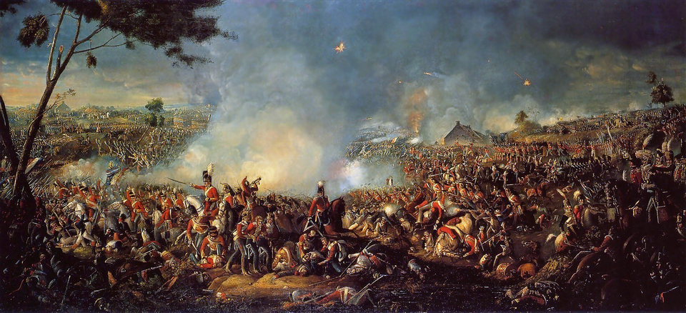

Waterloo: cae Napoleón para siempre
El ejército del emperador fue deshecho al anochecer por las fuerzas de Wellington, cuando la llegada de los prusianos de Blücher inclinó una jornada que estuvo largamente indecisa. Los Cien Días terminan en un lodazal belga.

La batalla que Europa esperaba con el aliento contenido se libró ayer domingo sobre las colinas que rodean la aldea de Waterloo, al sur de esta ciudad, y su resultado ya corre por todos los caminos del continente: el ejército de Napoleón Bonaparte ha dejado de existir. Durante todo el día, los cuadros del duque de Wellington resistieron sobre el barro las cargas de la caballería francesa y el fuego de la Gran Batería, hasta que al caer la tarde asomaron por el este las columnas prusianas del viejo mariscal Blücher, que había prometido llegar y llegó.
El emperador jugó entonces su última carta: la Guardia Imperial, la que jamás retrocedió, subió la colina entre la metralla y por primera vez en su historia se quebró. «La Garde recule!», corrió el grito por las filas francesas, y con la Guardia recularon todos. De los despojos del ejército más temido del mundo quedaron sobre el campo decenas de miles de muertos y heridos de todas las naciones; los que vieron el amanecer de hoy sobre ese valle dicen que no hay victoria que pague semejante espectáculo.
Los Cien Días fueron una novela que Europa leyó sin aliento. Escapado de Elba el primero de marzo con un millar de hombres, Bonaparte desembarcó en Francia y no disparó un solo tiro hasta París: los regimientos enviados a detenerlo se le fueron sumando en cada recodo del camino, y el rey Luis huyó a Gante sin esperar el desenlace. El Congreso reunido en Viena, que se repartía el mapa bailando, lo declaró fuera de la ley —al hombre, no a Francia, sutileza de juristas para no tener que negociar con él—, y cuatro ejércitos se pusieron en marcha. El emperador apostó a su jugada de siempre: meterse como una cuña entre ingleses y prusianos y batirlos por separado. En Ligny, hace dos días, venció a Blücher sin destruirlo. Ese matiz decidió el siglo.
Los que estuvieron cuentan la jornada por cuadros: la lluvia de la víspera, que hizo del valle un lodazal y demoró el ataque hasta media mañana; la granja de Hougoumont ardiendo con los combatientes adentro; los cuadros rojos de la infantería inglesa cerrándose una y otra vez ante doce cargas de caballería; y el duque de Wellington mirando el reloj y pidiendo, según le oyeron los ayudantes, «la noche o Blücher». De la Guardia acorralada quedó la leyenda de una respuesta soberbia a la intimación de rendirse, que unos cifran en una sola palabra de soldado y otros en la frase «la Guardia muere, no se rinde». Esta mañana, decenas de miles de hombres yacen en pocos kilómetros cuadrados, y los campesinos flamencos han empezado, sin épica ninguna, a enterrarlos.
Bonaparte galopa hacia París, donde nadie espera ya salvarlo. Escapó de Elba hace apenas cien días para reconquistar un imperio; lo pierde ahora entero y, es de presumir, sin segunda vuelta: esta vez las potencias no le regalarán una isla a la vista de Francia. Veintitrés años de guerras casi continuas parecen cerrarse en este campo flamenco. Europa respira; los reyes vuelven a sus tronos; y el siglo, que nació a caballo entre revoluciones, tendrá que aprender a vivir sin el hombre que lo llenaba todo.